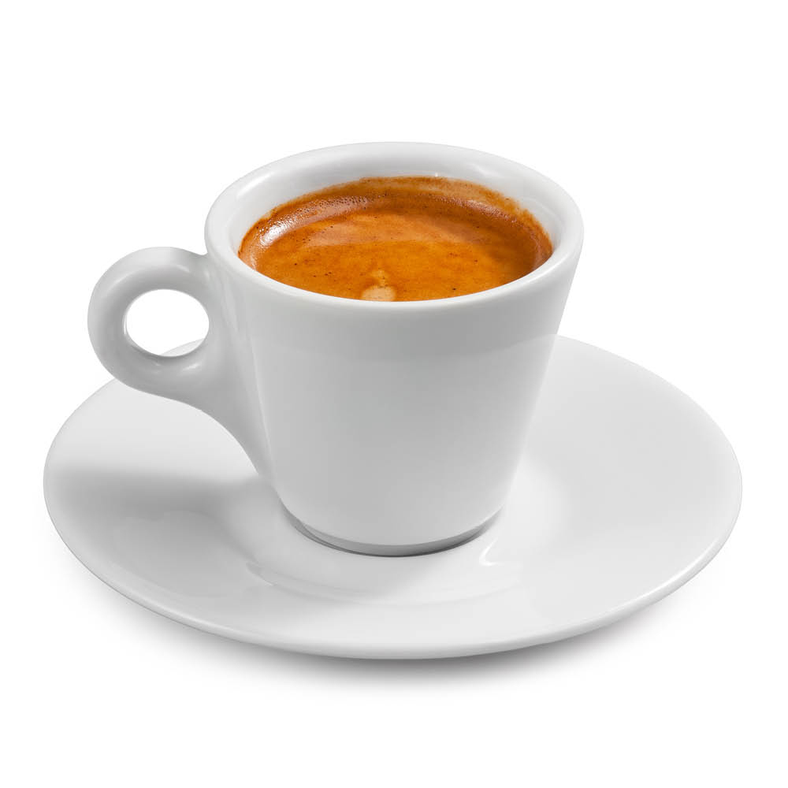

Рецепты кофейных напитков
Предлагаем рецепты самых популярных кофейных напитков!
Эспрессо
Кофе эспрессо (espresso) — это небольшая порция (25–30 мл) крепкого черного кофе.
- Перемелите зёрна кофе до средней или мелкой консистенции, либо сразу отберите нужный объём молотой смеси.
- В холдер рожковой кофеварки плотно и аккуратно уложите смесь — от её равномерности зависит полнота вкуса напитка.
- Установите холдер на место, чашку — под холдер, включите программу espresso.
Американо
Американо — это кофе, состоящий из эспрессо, разбавленного горячей водой.
- «Рожок» доверху наполните молотым кофе и залейте воду в резервуар до обозначенной отметки.
- Чтобы напиток получился полнотелым и с красивой пенкой, важно правильно настроить кофемашину, следуя рекомендациям из инструкции.
- В готовый эспрессо останется лишь добавить горячую воду в соотношении 1:1, 1:2 или 1:4.
Капучино
Капучино — это напиток на основе эмульгированного молока и свежесваренного эспрессо/
- Прогрейте оборудование, выпустите пар из паровой трубки, проверьте напор.
- Налейте молоко в питчер примерно на 50 % его объёма.
- Погрузите капучинатор на глубину от 0,5 до 1 см под углом 45 градусов и подайте пар.
- Взбивайте молоко до тех пор, пока его температура не повысится до 70 °С (примерно 2 минуты). Перегревать пенку нельзя.
- Выключите подачу пара и извлеките капучинатор.
- Взболтайте несколько раз питчер с вспененным молоком, чтобы пена стала более однородной.
- Сварите эспрессо по классической технологии.
- Налейте в подогретую чашку эспрессо, молоко и молочную пену.